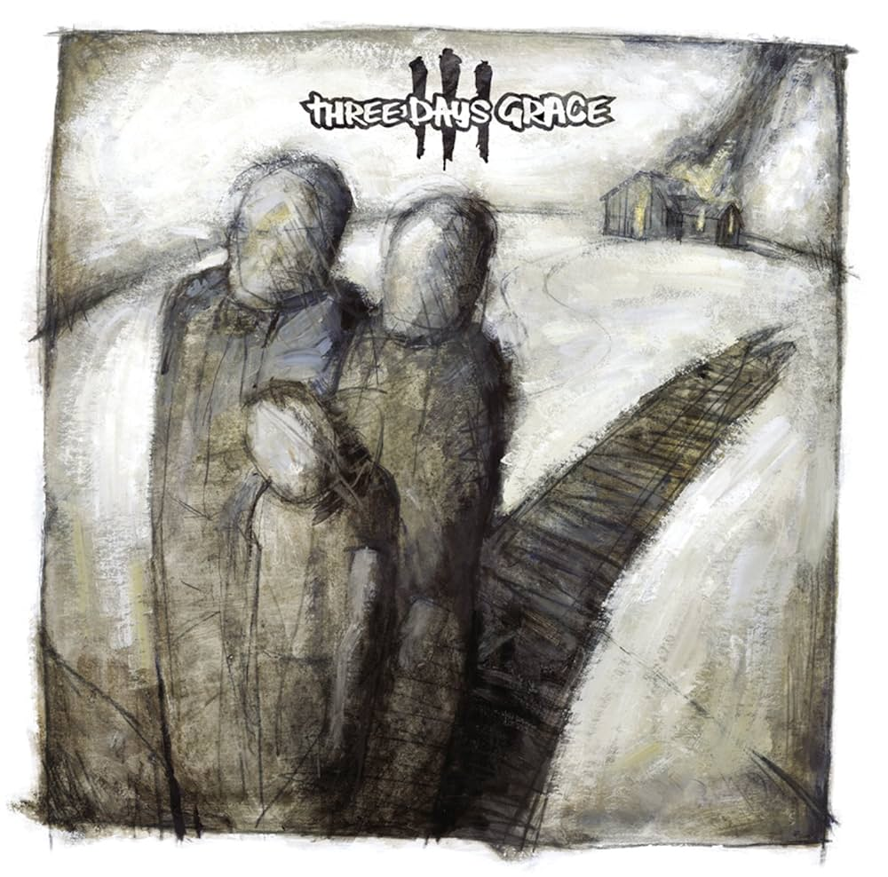

Three Days Grace
Back

Three Days Grace is my go to for a slightly harder rock than usual. I grew super addicted to them after first listening to one of their songs on the radio, and they were the first concert I ever went to see.